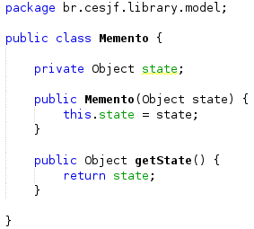
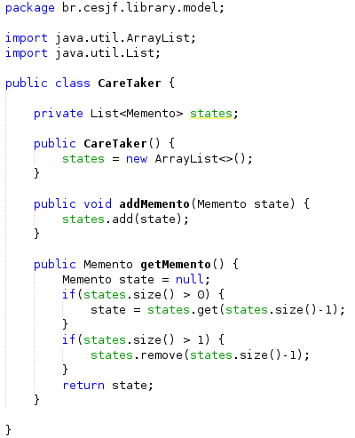
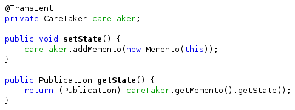
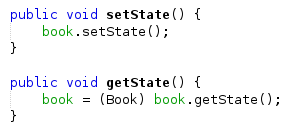
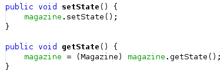
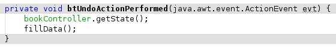
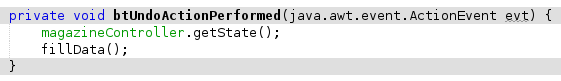

Memento
O Strategy é um padrão de projeto comportamental que permite permite armazenar o estado interno de um objeto em um determinando momento, para que seja possível retorná-lo a este estado, sem que isso cause problemas com o encapsulamento.
Ele foi utilizado nas classes Model abaixo:
- Memento
- CareTaker
- Book (Implementação do Memento)
- Magazine (Implementação do Memento)
Para o uso do Memento na interface foi necessário também a inclusão de código nos Controllers e Views abaixo:
- BookController
- BookView (Somente na alteração de Livro)
- MagazineController
- MagazineView (Somente na alteração de Revista)
Exemplo de implementação:
Memento:

CareTaker:

Implementaçao nas classes Book e Mazazine (Model):

Uso do Memento no ControllerBook:

Uso do Memento no ControllerMagazine:

Implementação do botão de desfazer na tela de Alteração de Livro:

Implementação do botão de desfazer na tela de Alteração de Revista:
